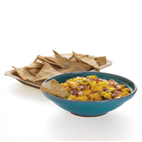

Mango Salsa

Ingredients
• 1 mango, peeled, pitted, and cut into 1/4-inch pieces (about 2 cups)
• 1 small red onion, chopped
• 1/2 cup packed, fresh cilantro leaves, chopped
• 1 serrano or jalapeno chile, minced (ribs and seeds removed for less heat, if desired)
• 1 tablespoon fresh lime juice
• Coarse salt
• Baked tortilla chips, for serving
Directions
In a medium bowl, combine mango, onion, cilantro, chile, and lime juice; season with salt. Serve with tortilla chips.